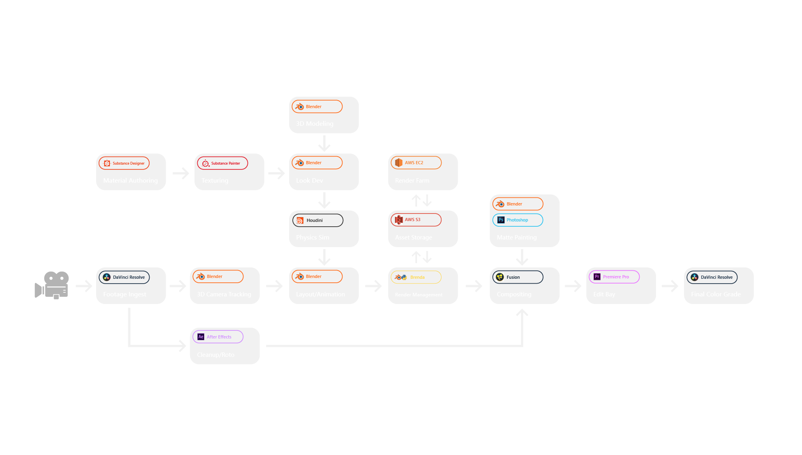

Joseph Donovan is an art director, 3D artist, experience designer, sound designer, and music composer.
< Back
Zilly's War: Chapter One
TOOLS USED
- Blender
- Blackmagic Fusion 9
- Substance Suite
- Houdini
- Rendered in Cycles
- Amazon Web Services EC2
- After Effects
- Photoshop
- Blackmagic DaVinci Resolve
ABOUT
"Zilly's War: Chapter One" is a proof-of-concept short film from Reflection Films telling the story of Eve Abbadon, an astronaut on a multi-year mission to a close exoplanet called ZL-24971, a.k.a, Zilly. The film was written and directed by John Broadhead based on his novella of the same name. I had the privilege of working on both the production and post-production leg of the film, and was the sole visual effects artist. Models and assets were created in Blender and Houdini, with look dev in Blender, and final rendering done in Cycles on a custom-built Amazon Web Services EC2 cloud render farm. Texturing was done in Substance Suite, and compositing was done in Blackmagic Fusion 9.


